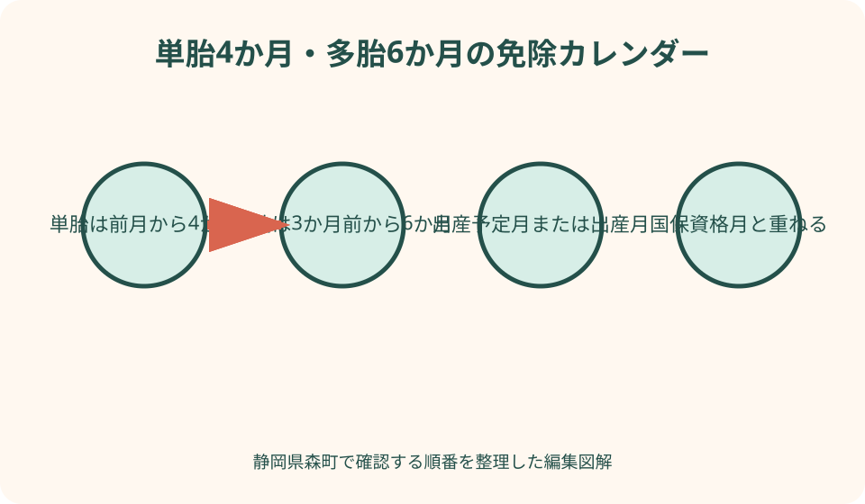
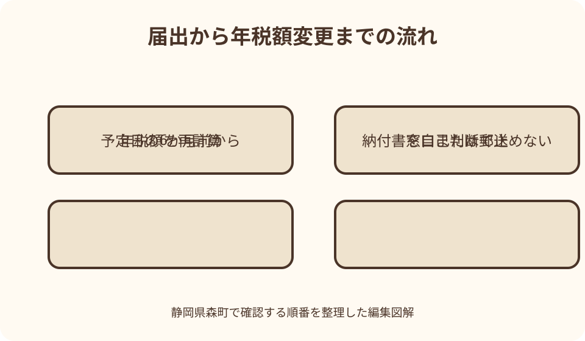

健康・医療・保険｜最終確認 2026-08-10
静岡県森町の産前産後「国民健康保険税免除」｜4か月・多胎6か月と届出方法
静岡県森町では、国民健康保険に加入する出産予定者について、産前産後の一定期間に本人へ課される国民健康保険税の所得割額と均等割額を全額免除します。単胎は4か月、多胎は6か月が基本です。ただし、世帯全員の国保税がゼロになる制度ではなく、納付書の4回分がそのまま消えるとも限りません。対象月、国保加入期間、届出の有無を分けて確認する必要があります。

編集イラスト最初に結論：単胎4か月・多胎6か月
森町国民健康保険に加入する人が出産すると、出産する本人に課される国民健康保険税のうち、一定期間の所得割額と均等割額が全額免除されます。制度は2024年1月から始まりました。
単胎妊娠では、出産予定月または出産月の前月から数えて4か月間が対象です。たとえば10月出産なら、9月、10月、11月、12月が基本の免除対象期間になります。
多胎妊娠では、出産予定月または出産月の3か月前から数えて6か月間です。10月出産なら、7月から12月までが基本の対象期間となり、単胎より産前の対象が2か月長くなります。
免除の対象月と、納付書に印字された納期は同じ概念ではありません。年間税額を算定し直した結果が各納期へ配分されるため、『4か月なら納付書4枚が不要』とは判断しないでください。
免除されるのは出産する本人の所得割と均等割
対象は、出産する被保険者本人に賦課される所得割額と均等割額です。同じ世帯の配偶者や親など、ほかの国保加入者に課される部分まで一律に免除されるわけではありません。
森町の国保税には、世帯や加入者の所得・人数などを基に計算する複数の要素があります。産前産後免除は、そのうち出産被保険者の対象期間相当分を減らす仕組みで、世帯の年税額全体をゼロにする制度ではありません。
所得割がもともとない世帯でも、出産する本人の均等割額があれば、その対象期間相当分が免除されます。一方、どの程度税額が下がるかは世帯の算定状況により異なります。
森町は、国保税額が賦課限度額に達している世帯では、産前産後免除を反映しても最終税額が変わらない場合があると注意しています。対象者であることと、納付額が必ず下がることは分けて理解します。
対象者は森町国保の出産被保険者
森町の対象者は、森町国民健康保険へ加入し、2023年11月以降に出産した人です。制度開始前後の経過期間を示す条件であり、現在の届出では出産月と国保加入期間を具体的に確認します。
会社の健康保険で被扶養者になっている人や、自身が勤務先の健康保険へ加入している人は、森町国保税の納税対象者ではありません。勤務先制度の産前産後休業中の保険料免除を別に確認します。
出産予定日前に就職して森町国保を脱退した場合、免除対象期間の全月が森町国保と重なるとは限りません。国保資格がある月に対応する軽減の扱いを国保年金係へ確認します。
反対に、妊娠中に退職して途中から森町国保へ加入した場合も、対象期間と国保資格が重なる月を確認します。妊娠している事実だけで、加入前の他保険の保険料まで森町が免除するわけではありません。
単胎4か月の数え方
単胎では、出産予定日または出産日が属する月を基準月とし、その前月から4か月を数えます。10月が基準なら9月から12月、1月が基準なら前年12月から3月です。
年度をまたぐ場合でも、4か月を年度内だけに縮めるわけではありません。ただし国保税は年度ごとに計算されるため、前年度分と新年度分で決定通知が分かれる可能性があります。
予定日と実際の出産月が異なれば、届出後の対象期間が変わることがあります。9月予定が10月出産になった例なら、どちらの月で最終計算するかを森町の処理結果で確認します。
日単位で産前42日、産後56日を数える勤務先の休業制度とは異なり、この国保税免除は月単位です。月初と月末のどちらに出産しても、同じ出産月なら基本となる4か月の並びは同じです。
多胎6か月の数え方
双子や三つ子など多胎妊娠では、基準月の3か月前から6か月間が対象です。10月が基準なら7月、8月、9月、10月、11月、12月を数えます。
胎児数が二人なら免除期間が二倍になる制度ではありません。多胎として6か月の対象期間が設定されるもので、双子は6か月、三つ子ならさらに延びると自己計算しないでください。
妊娠中に多胎と判明したら、母子健康手帳などでその事実を示す方法を森町へ確認します。届出書にも単胎・多胎を記載する欄があるため、予定月と一緒に正確に記入します。
多胎で予定より早く出産することは珍しくありません。届出済みでも出産月が変わったら、出生届の情報だけで自動修正されるか、追加連絡が必要かを国保年金係へ尋ねます。
流産・死産・人工妊娠中絶も対象に含む
森町は、妊娠85日以上の死産、流産、人工妊娠中絶も制度上の出産に含めています。妊娠4か月という表現だけで判断せず、医療機関が確認した妊娠日数を基に相談してください。
この場合、母子健康手帳に出生予定や出産結果が十分記録されないことがあります。死産証書、医療機関の証明など、出産日と妊娠日数を確認できる代替資料を森町へ尋ねます。
手続のために経験を何度も説明することは大きな負担です。家族が代わりに相談するなら、本人の同意を得て、国保資格、妊娠日数、出産日に必要事項を絞って伝えます。
出生届で町が出産事実を把握できない場合は、自動的な処理を期待せず届出を行う方が確実です。該当するか迷う段階でも、書類を捨てず国保年金係へ相談します。

届出は予定日の6か月前から可能
森町では、出産予定日の6か月前から届出できます。出産後まで待つ必要はなく、妊娠中に国保資格と予定日が分かれば、体調のよい時期に準備できます。
早めに届出をしても、予定月が変わる可能性はあります。提出控えを保管し、医療機関から予定日の変更を伝えられたときに町への再連絡が必要か確認します。
免除を受けるには原則として届出が必要です。ただし森町は、出生届などにより出産の事実を町で確認できた場合、届出が不要になることがあると案内しています。
『不要になることがある』は、全員が手続不要という意味ではありません。予定日で事前に軽減したい人、転入者、流産・死産、町が情報を確認できない人は、届出の要否を直接確認します。
必要書類と提出方法
森町は、産前産後期間に係る保険税軽減届出書を国保年金係で配布し、町公式ページからPDFでも提供しています。記入例もあるため、氏名、住所、出産予定日などを照合して記入します。
添付書類は、運転免許証やマイナンバーカードなど本人確認書類の写しと、母子健康手帳の表紙および出産予定日が記載されたページの写しです。原本を郵送しないよう注意します。
提出先は森町役場住民生活課国保年金係で、窓口提出と郵送の両方が案内されています。郵送先は〒437-0293 周智郡森町森2101-1です。
出産後の届出、多胎、流産・死産、代理提出では、通常の二点以外に確認資料が必要な場合があります。送付前に手元の資料名を伝え、不足と返送を避けてください。
転入した人は森町で再度届出
森町の国民健康保険税ページは、転入前の市町村で産前産後軽減を受けていた人も、森町で再度申請が必要と案内しています。自治体間で届出が自動移送されるとは考えないでください。
転入日が免除対象期間の途中なら、前住所地と森町のどちらがどの月を計算するかを両自治体へ確認します。同じ月を二重に免除するのではなく、国保資格の所在に応じて整理されます。
転出する場合も、森町での手続が新住所地へそのまま引き継がれるとは限りません。転出日、新住所地の国保加入日、出産予定月を記録し、新住所地で必要な届出を尋ねます。
引越しの荷物に母子健康手帳や届出控えを入れ込むと、再申請時に見つからないことがあります。資格確認資料と合わせ、すぐ取り出せる手荷物として管理します。
納付書と決定通知の読み方
届出後は、国保税の変更決定通知で年税額と各納期の金額を確認します。免除対象が4か月でも、年税額の減額分が残りの納期へ再配分され、納付額の変化は4回とは限りません。
すでに対象期間相当分を納めている場合は、今後の納期へ充当されるか、還付になるかを確認します。還付を装う詐欺もあるため、口座情報は森町が指定する正規の方法で提出します。
口座振替を利用している人は、変更通知が届いた時点と引落しデータの作成時点がずれる場合があります。直近の引落額が変わるか、国保税担当へ確認してください。
世帯主が納税義務者で、出産する本人とは別人の場合、通知は世帯主宛てに届くことがあります。家族が封筒を未開封のままにせず、本人の軽減が反映されたかを一緒に確認します。
年度をまたぐときの確認
国民健康保険税の年度は4月から翌年3月までです。1月出産の単胎なら、基本の免除対象は前年12月から3月で同一年度内ですが、4月出産なら3月から6月となり二年度へまたがります。
年度をまたぐと、前年度の変更通知と新年度の当初通知が別々に届く可能性があります。一通だけ見て4か月分が反映されていないと判断せず、対象月を年度別に分けて照合します。
年度ごとに税率や賦課限度額が改定されることがあります。免除月数が同じでも、各月相当の減額を単純に前年の月額で掛け算しない方が安全です。
森町の決定額へ疑問がある場合は、届出日、予定日、実際の出産日、国保加入期間、届いた通知の日付を伝えます。『思ったより少ない』だけでなく、どの対象月が見当たらないかを示します。

出産育児一時金とは別制度
産前産後の国保税免除と、出産育児一時金50万円は別制度です。一時金は出産費用を支える保険給付、こちらは出産する本人の一定期間の国保税負担を軽くする仕組みです。
出産施設で直接支払制度へ合意しても、国保税免除の届出が同時に提出されるわけではありません。医療機関と森町役場で手続先が異なるため、家族の一覧には別の行を作ります。
一時金の差額申請に使う領収・明細書と、国保税免除に使う本人確認書類・母子健康手帳も異なります。一つの封筒へ混在させず、給付と税で分けます。
流産・死産は両制度の対象になり得ますが、支給額や必要資料の判断はそれぞれ行われます。一方の手続が受理されたから他方も自動完了したとは考えず確認してください。
国民年金の産前産後免除とも別
国民年金第1号被保険者には、産前産後期間の国民年金保険料免除制度があります。期間は単胎4か月、多胎6か月と似ていますが、国保税とは異なる制度です。
国民年金の免除期間は保険料を納めたものとして老齢基礎年金額へ反映される特徴があります。国保税の所得割・均等割免除と混同せず、年金の届出も必要か国保年金係へ確認します。
勤務先の健康保険と厚生年金へ加入する人には、事業主が届け出る産前産後休業期間の保険料免除があります。『産前産後免除』という同じ呼び方でも、加入制度によって窓口が違います。
家族のチェック表には、国保税、国民年金、出産育児一時金、妊婦支援給付を別々に書きます。対象者、届出先、基準日を分けるだけで、提出漏れと重複問い合わせを減らせます。
森町の妊娠支援と一緒に確認する
森町の妊娠・出産ページでは、母子健康手帳の交付、妊婦健康診査、産後ケアなどを案内しています。国保税免除の届出に使う母子健康手帳は、健康こども課での妊娠届出を経て交付されます。
母子健康手帳交付時には、本人確認や妊婦支援給付の案内も行われますが、国保税免除の届出先は住民生活課国保年金係です。窓口間で自動的にすべて済むと考えず、それぞれ確認します。
森町の『妊婦のための支援給付』は妊娠時と出産後の経済支援で、国保加入者だけに限定された税免除ではありません。支給額を国保税へ直接充てる制度でもありません。
北部地域から役場や保健福祉センターへ出向く負担を減らすなら、同じ日に可能な手続、郵送できる届出、面談予約を電話で整理します。体調を優先し、家族の代理可否も聞いてください。
産前産後免除の良い点
良い点は、所得の多寡だけでなく、出産する国保加入者本人の産前産後期間に着目して所得割と均等割を免除することです。収入が変わる前の所得で国保税が計算される負担を和らげます。
出産前6か月から届出できるため、出産後の慌ただしい時期まで手続を待つ必要がありません。予定日が分かった段階で提出し、家計の見通しを早めに更新できます。
妊娠85日以上の流産・死産・人工妊娠中絶も含むため、出生した場合だけに限定されません。身体的負担がある期間の国保税を支える制度として設計されています。
窓口だけでなく郵送提出が案内されている点も、外出が難しい妊婦にとって実用的です。本人確認書類と母子健康手帳は写しを使うため、原本を手元に残せます。
森町の案内に注文したい点
注文したい点は、森町のページが制度の要点を示している一方、具体的な月例が少ないことです。年度またぎ、途中加入、途中脱退、多胎のカレンダー例があれば誤解を減らせます。
『所得割額と均等割額の全額』という表現は、世帯全体の国保税が全額免除されるようにも読めます。出産する本人の対象期間相当分であることを、世帯図で示してほしいところです。
出生届で町が確認できれば届出不要になる場合があるとの案内も、誰が不要かを本人が判断しにくい部分です。処理済みか確認できる方法や通知時期が明示されると安心です。
国保税、国民年金、出産育児一時金、妊婦支援給付の入口が複数ページに分かれています。妊娠届出時に四制度の担当と期限を一枚で渡す案内があると、家族の負担をさらに軽くできます。
自動反映されないときの代案・結論
出生届を出した後も国保税の変更が見えない場合は、処理時期を待つだけでなく、国保年金係へ産前産後免除の登録状況を確認します。出生届の提出日と通知書番号を用意します。
母子健康手帳に予定日の記載がない、紛失した、流産・死産で通常ページを使えない場合は、医療機関の証明など代替資料を尋ねます。届出を諦める前に、何が確認できればよいかを聞いてください。
体調や移動の問題で窓口へ行けなければ、森町が明記する郵送を利用できます。代理人が対応する場合は、本人確認書類、委任、返送先の条件を事前に確認します。
結論として、対象月をカレンダーへ塗り、森町国保の資格月と重ねることが最初の一歩です。その上で届出書と二種類の写しを提出し、変更決定通知で反映を確かめます。
大石の視点：納付書の枚数ではなく年税額を見る
大石の視点では、最も避けたい誤解は『4か月免除だから4回払わない』です。国保税の対象月と納期は一致しないため、自己判断で口座振替を止めたり納付書を捨てたりしてはいけません。
家計表には、免除対象月、届出日、変更前の年税額、変更後の年税額、残りの納期を並べます。これなら、制度が家計へどう反映されたかを通知書から確かめられます。
森町で暮らす家族には、出産前後の移動、健診、分娩、育児用品など多くの支出があります。軽減見込額を先に使うのではなく、決定通知が届いてから予算へ反映する方が堅実です。
転居や就職が重なる家庭ほど、一枚のカレンダーが役立ちます。国保資格、出産予定、実際の出産、年度境界を別色で示せば、どの自治体や保険者へ尋ねるべきかが見えてきます。
一次情報で制度の骨格を確かめる
森町公式の専用ページは、対象者、4か月・6か月、所得割と均等割、予定日の6か月前からの届出、本人確認書類と母子健康手帳、郵送先をまとめています。申請時の中心資料です。
森町の国保税ページでは、低所得世帯、未就学児、非自発的失業など別の軽減制度と並べて産前産後免除を案内しています。複数の軽減が関係するときは、最終計算を町へ確認します。
厚生労働省の資料でも、国保の出産被保険者について4か月相当の均等割保険料と所得割保険料を公費で軽減する制度として説明されています。自治体独自の一時的な給付ではありません。
静岡県は国民健康保険の運営を市町とともに担いますが、住民の具体的な国保税届出は森町が窓口です。国の仕組み、県の運営、森町の申請実務を分けて読むと迷いません。
まとめ：届出から通知確認まで
まず、出産予定月を基準に単胎4か月または多胎6か月をカレンダーへ書きます。次に、その期間のうち森町国保へ加入している月を確認します。
出産予定日の6か月前になったら、届出書、本人確認書類の写し、母子健康手帳の表紙と予定日ページの写しを準備し、国保年金係へ提出または郵送します。
出産月、国保資格、住所が変わったら町へ連絡します。出生届だけで処理されると思い込まず、変更決定通知で本人の所得割・均等割へ免除が反映されたかを確認します。
本稿は2026年8月10日時点の一次情報に基づきます。税率、様式、受付方法は改定され得るため、実際の届出では森町公式ページと住民生活課国保年金係の最新回答を優先してください。
公式情報・確認先
掲載内容は次の一次情報を基礎に整理しました。営業、料金、催し、交通は変わるため、出発前または手続き前にリンク先で最新情報を確認してください。
- 産前産後の国民健康保険税の免除について（静岡県森町、2026-08-10確認）
- 国民健康保険税とは（静岡県森町、2026-08-10確認）
- 妊娠・出産（静岡県森町、2026-08-10確認）
- 妊婦のための支援給付（静岡県森町、2026-08-10確認）
- 国民年金の産前産後期間の保険料免除制度について（厚生労働省、2026-08-10確認）
- 令和7年版厚生労働白書 国民健康保険における産前産後期間の保険料免除（厚生労働省、2026-08-10確認）
- 国民健康保険の保険料（税）（静岡県、2026-08-10確認）